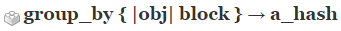
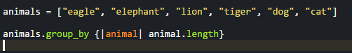
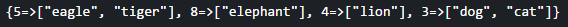

Enumerable Methods!
Enumerable#group_by
December 13, 2015
Another blog post means another week has passed! This week we dived deeper into Ruby and into the world of Enumerables! Enumerable methods can only be used within a class that has a .each method that iterates over each item and yields it to a supplied code block. Assuming the class has an each method, it is now able to use a number of enumerable methods with cool names such as map!, include?, inject, etc. The one we will be focusing on today is the group_by method.
The group_by method works on either an array or hash and returns a hash. The keys of the new hash will be the evaluated results from the provided code block and the values will be arrays or groups from the original data that correspond to the key.
Above is the image from ruby doc showing how group_by works. As I described in the previous paragraph it is followed by a code block and always returns a hash.
Now let's take a look at some examples of how this works. Let's say we had an array of animals containing 6 different animals and we wanted to group them by the length of their name. The code for the method would look like this:
If we were to run this code, we would get the following result which has the number of letters in each animal's name as the key and an array of the animals with the same number of letters as the value.
There are many ways that we can group items in an array or hash by. Although, I just showed you strings grouped by length we can also do this by forming random groups, grouping items into arrays of a designated number, and a wide variety of other possibilities.
Hopefully, my brief introduction to the enumerable group_by taught you something. Thank you for reading, and happy coding!